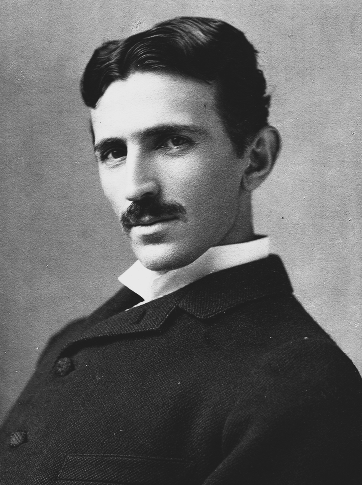
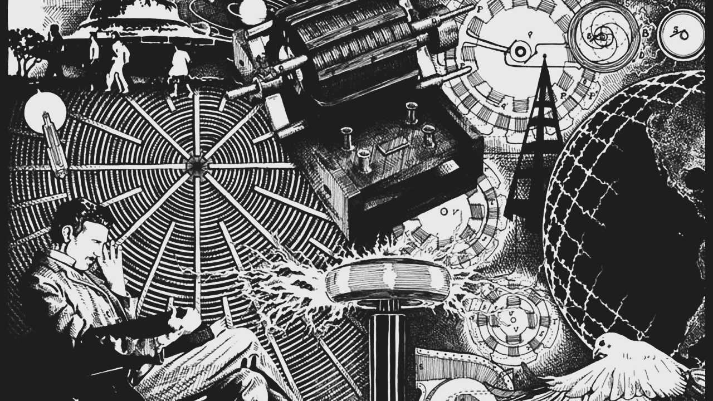

Nikola Tesla
1856 - 1943
"The Man who Invented the 20th Century"


An art with his different discoveries
Biography
Nikola Tesla, born July 10, 1856, Smiljan, Austrian Empire [now in Croatia]—died January 7, 1943, New York, U.S., is a Serbian American inventor and engineer who discovered and patented the rotating magnetic field, the basis of most alternating-current machinery. He also developed the three-phase system of electric power transmission. He immigrated to the United States in 1884 and sold the patent rights to his system of alternating-current dynamos, transformers, and motors to George Westinghouse. In 1891 he invented the Tesla coil, an induction coil widely used in radio technology.
Timeline
- 1856 - Nikola Tesla was born in Smiljan, part of the Austro-Hungarian Empire.
- 1875 - Tesla enrolled at Austrian Polytechnic to study engineering.
- 1882 - He worked for Continental Edison in Paris. He was attempting to improve on electrical equpment from the US.
- 1882 - Working independently, Tesla identified the principle of rotating magnetic field, which is used today in alternators.
- 1884 - Tesla moved to United States, immediately approaching Thomas Edison with a letter of introduction. He was offered to solve a problem from 50,000 dollars, but Edison never paid.
- 1885 - Nikola Tesla quits working for Edison due to Edison's refusal to pay. He planned on starting his own electrical company.
- 1886 - Tesla founded the Tesla Electric Light and Manufacturing Company in Rahway, New Jersey. He invented and marketed an arc lamp.
- 1887 - The War of Currents began in 1887. Direct current, invented and supported by Edison, was in direct competition with Tesla's alternating current.
- 1891 - Tesla patented the Tesla Coil. The Tesla Coil is a resonant transformer circuit that produced a high voltage, low current and high frequency alternating current electricity.
- 1891 - With the support of the Westinghouse Company, Tesla's alternating current powered the World's Columbian Exhibition. Tesla had offered a lower cost electrical solution.
- 1901 - Construction began on the Wardenclyffe Tower. Tesla believed that he could transmit electrical energy over long distances wirelessly, and the tower would illustrate that. The project was never fully completed.
- 1915 - Tesla filed suit against Guglielmo Marconi. Marconi is typically credited with radio transmission; however, Tesla accomplished this before Marconi.
- 1934 - The New York Times published Tesla's particle beam research. While he was not financially successful, he continued to be a relatively prominent voice in the scientific community.
- 1943 - On January 7, 1943, as World War II raged, Nikola Tesla died in the hotel he made his home. Upon his death, the U.S. government immediately seized his papers and research.
- 1960 - The scientific community recognized Tesla's achievements by defining a Tesla as a unit of measurement. A Tesla is a unit of magnetic field B.